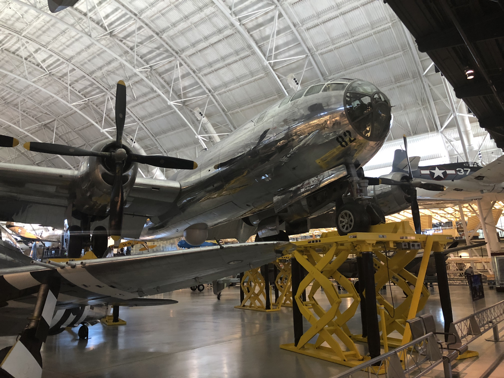

大部分去华盛顿玩的人都知道美国航空航天博物馆就在市中心的独立大道上，白宫南草坪旁边，去华盛顿的人都会去那里玩（好像女生除外）。
但是！！！！在华盛顿西北的杜勒斯国际机场其实还有一个分馆，绝对不容错过！
新馆建于2003年，考虑到市中心的博物馆面积太小，很多展品没法放进去，而美国航空工业又是吊打全世界，这么小一个博物馆实在是不够炫耀，于是新建了这座博物馆。
博物馆名叫 史蒂文·乌德沃尔哈齐中心（Steven F. Udvar-Hazy Center） 位于 华盛顿杜勒斯国际机场 地址是:14390 Air and Space Museum Pkwy, Chantilly, VA 20151。 博物馆免费，但是每辆车收15块钱停车费。由于离市区太远你必须开车去，相当于每车人15块钱吧。
SR-71
一进去首先看到的就是著名的黑鸟SR-71，在《变形金刚2》中出现，天火的原型！！


B-29
B-29超级堡垒轰炸机，亦称B-29超级空中堡垒，不仅是二次大战时各国空军中最大型的飞机，同时亦是当时集各种新科技的最先进的武器之一。总生产量为3,900架左右。但是这一架不一样！！
这一架的名字叫做Enola Gay，没错就是当年在广岛上空扔下原子弹那架

艾诺拉·盖（Enola Gay）是一架隶属于美国陆军航空军第509混合飞行大队的B-29超级堡垒轰炸机，“艾诺拉·盖”这命名源自该机机长保罗·蒂贝茨（Paul Tibbets）母亲的名字——Enola Gay Tibbets。此飞机执行了于日本时间1945年8月6日早上8点15分，在广岛上空掷下“小男孩”原子弹的任务。


F4U 海盗
据美国海军统计，第二次世界大战中F4U的击落比率为11:1，即每击落11架敌机才有1架被击落，拥有着傲人战绩；所以也让部分日本飞行员认为海盗式是二战中美军最强悍的战机。《皇牌空战》里的轰炸机啊，满满的回忆~

米格15 和 F86佩刀
米格15， 抗美援朝的工程，中国人口中的歼五，五爷。

旁边就是米格15 的死对头F-86佩刀，从朝鲜打到金门。


米格21 和 F4 鬼怪
也是两个死对头

F14
是根据美国海军20世纪70年代至80年代舰队防空和护航的要求研制的双座双发超音速多用途舰载战斗机, F4的代替品。 看过《壮志凌云》的同学一定不会陌生！！不过这款飞机已经退役了。

F35 闪电
美国的第四代飞机，由洛克希德马丁公司研发，F22的辅助机种，美国空军海军未来的机种。


发现号航天飞机
最厉害的是博物馆里还塞了架航天飞机！！
美国是世界上第一个拥有与实际操作航天飞机、并是唯一成功以航天飞机进行过载人任务的国家，也是机队阵容最庞大的国家。其中，挑战者号在发射过程中爆炸，哥伦比亚号在返回地球时解体。
这架发现号航天飞机，于2011年3月9日退役，完成了39次飞行任务。


如果你是航空迷，来华盛顿一定不能错过这个博物馆。博物馆仍在不停地安置展品，截止2008年11月，已经有163架飞机和154艘飞船陈列。最终计划安放200余架飞机~